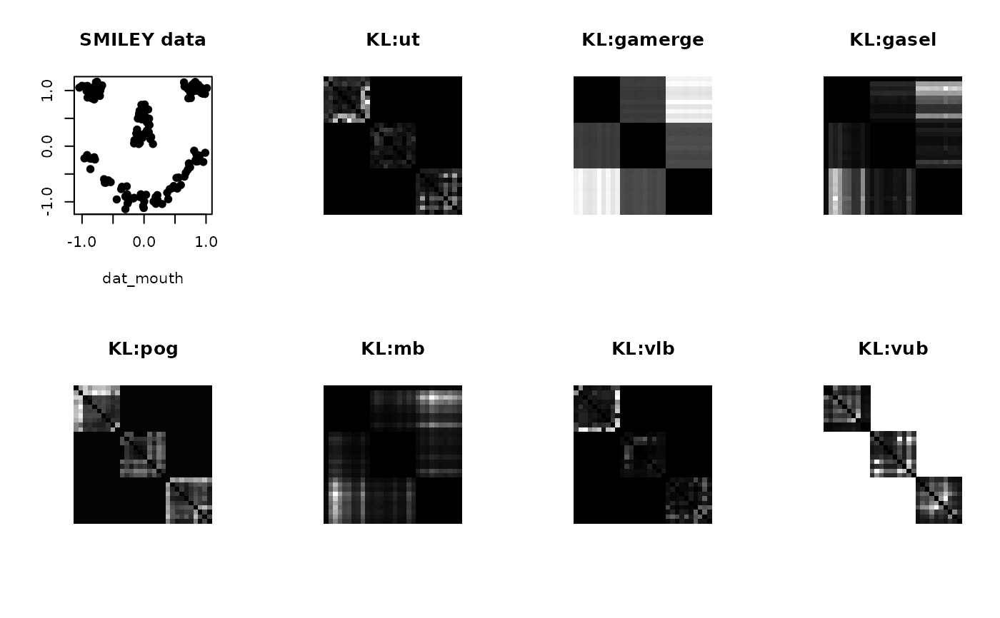

Kullback-Leibler divergence is an asymmetric measure of discrepancy for two measures $$D_{KL}(P,Q) = \int p(x) \log \frac{p(x)}{q(x)} dx$$ but for Gaussian mixture models, its analytical form does not exist. Here we implement some approximations for the quantity. Several methods are available which is described in the parameter section.
gmmdistKL(gmmobj1, gmmobj2, method)
| gmmobj1 | first |
|---|---|
| gmmobj2 | second |
| method | name of a method to be used, including
|
computed KL divergence value.
Julier S, Uhlmann JK (1996). “A General Method for Approximating Nonlinear Transformations of Probability Distributions.” University of Oxford, Dept. of Engineering Science.
Goldberger, Gordon, Greenspan (2003). “An Efficient Image Similarity Measure Based on Approximations of KL-Divergence between Two Gaussian Mixtures.” In Proceedings Ninth IEEE International Conference on Computer Vision, 487--493. doi: 10.1109/ICCV.2003.1238387 .
Hershey JR, Olsen PA (2007-apr). “Approximating the Kullback Leibler Divergence Between Gaussian Mixture Models.” In 2007 IEEE International Conference on Acoustics, Speech and Signal Processing - ICASSP '07, IV--317. doi: 10.1109/ICASSP.2007.366913 .
# \donttest{ # ------------------------------------------------------------- # KL Divergence for Gaussian Mixtures # # Data 1 : use SMILEY data 'gensmiley()' function. # Data 2 : SMILEY data is translated (+5) and rotated (rot) # Data 3 : SMILEY data is translated (+10) and rotated (rot). # ------------------------------------------------------------- ## GENERATE DATA # set up ndata = 10 ntot = 3*ndata rot = qr.Q(qr(matrix(rnorm(4),ncol=2))) # generate list_data = list() for (i in 1:ndata){ list_data[[i]] = (gensmiley(n=150, sd=0.1)$data) list_data[[i+ndata]] = (gensmiley(n=150, sd=0.1)$data)%*%rot + 5 list_data[[i+(2*ndata)]] = (gensmiley(n=150, sd=0.1)$data)%*%rot + 10 } ## FIT GMM MODELS WITH RANDOM K IN [4,10] list_gmm = list() for (i in 1:ntot){ list_gmm[[i]] = gmm(list_data[[i]], k=sample(4:10,1)) } ## COMPUTE PAIRWISE KL DIVERGENCE methods.all = c("ut","gamerge","gasel","pog","mb","vlb","vub") methods.num = length(methods.all) divergences = array(0,c(ntot,ntot,methods.num)) for (i in 1:ntot){ gi = list_gmm[[i]] for (j in 1:ntot){ gj = list_gmm[[j]] if (i!=j){ for (k in 1:methods.num){ divergences[i,j,k] <- gmmdistKL(gi,gj,methods.all[k]) divergences[j,i,k] <- divergences[i,j,k] } } } } ## VISUALIZE opar <- par(no.readonly=TRUE) par(mfrow=c(2,4), pty="s") plot(list_data[[1]], main="SMILEY data", pch=19) for (k in 1:methods.num){ tgt = divergences[,,k] image(tgt[,ntot:1], axes=FALSE, col=gray((0:128)/128), main=paste0("KL:",methods.all[k])) }